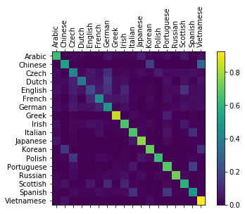

使用字符级RNN对名字进行分类
使用字符级 RNN 对名字进行分类¶
作者: Sean Robertson
我们将构建以及训练一个基础的字符级 RNN 来对单词进行分类。 字符级 RNN 将单词作为字符序列读取——在每个步骤都输出预测和“隐藏层”，然后将上一步的隐藏状态输入到下一步。 我们采用最终的预测作为输出，即单词属于哪个分类。
具体来说，我们使用来自18种语言的几千个姓氏进行训练，并根据拼写预测名字来自那种语言：
1 2 3 4 5 6 7 8 9 | $ python predict.py Hinton (-0.47) Scottish (-1.52) English (-3.57) Irish $ python predict.py Schmidhuber (-0.19) German (-2.48) Czech (-2.68) Dutch |
推荐阅读：
假设您至少安装了 PyTorch，了解 Python，且理解张量：
- https://pytorch.org/: 有关于安装说明
- :doc:
/beginner/deep_learning_60min_blitzto get started with PyTorch in general - :doc:
/beginner/pytorch_with_examplesfor a wide and deep overview - :doc:
/beginner/former_torchies_tutorialif you are former Lua Torch user
了解 RNN 及其工作方式是也是很有用的：
- The Unreasonable Effectiveness of Recurrent Neural Networks 展示了一系列现实生活中的例子
- Understanding LSTM Networks 它是特别针对 LSTM 的，但也提供了关于 RNN 的一般信息
准备数据¶
Note
从 https://download.pytorch.org/tutorial/data.zip 下载数据，并解压到当前目录。
data/names子目录中有18个文本文件，文件名的格式是”[language].txt”。
每个文件包含许多名字，每个名字一行。这些名字字符主要是罗马化的（但我们仍然需要将它们从 Unicode 转为 ASCII）。
最终得到一个“语言=>名字列表”字典，形如 {language: [names ...]}。
通用变量 “category” 和 “line”（在本例中用于表示语言和名字）对以后的扩展有用。
1 2 3 4 5 6 7 8 9 10 11 12 13 14 15 16 17 18 19 20 21 22 23 24 25 26 27 28 29 30 31 32 33 34 35 36 37 38 39 40 41 | from __future__ import unicode_literals, print_function, division from io import open import glob import os def findFiles(path): return glob.glob(path) print(findFiles('data/names/*.txt')) import unicodedata import string all_letters = string.ascii_letters + " .,;'" n_letters = len(all_letters) # Turn a Unicode string to plain ASCII, thanks to https://stackoverflow.com/a/518232/2809427 def unicodeToAscii(s): return ''.join( c for c in unicodedata.normalize('NFD', s) if unicodedata.category(c) != 'Mn' and c in all_letters ) print(unicodeToAscii('Ślusàrski')) # Build the category_lines dictionary, a list of names per language category_lines = {} all_categories = [] # Read a file and split into lines def readLines(filename): lines = open(filename, encoding='utf-8').read().strip().split('\n') return [unicodeToAscii(line) for line in lines] for filename in findFiles('data/names/*.txt'): category = os.path.splitext(os.path.basename(filename))[0] all_categories.append(category) lines = readLines(filename) category_lines[category] = lines n_categories = len(all_categories) |
1 2 | ['data/names/Arabic.txt', 'data/names/Chinese.txt', 'data/names/Czech.txt', 'data/names/Dutch.txt', 'data/names/English.txt', 'data/names/French.txt', 'data/names/German.txt', 'data/names/Greek.txt', 'data/names/Irish.txt', 'data/names/Italian.txt', 'data/names/Japanese.txt', 'data/names/Korean.txt', 'data/names/Polish.txt', 'data/names/Portuguese.txt', 'data/names/Russian.txt', 'data/names/Scottish.txt', 'data/names/Spanish.txt', 'data/names/Vietnamese.txt'] Slusarski |
现在我们有了变量 category_lines, 它是一个映射每一类型（语言）与行列表（名字）的字典。
我们还得到了变量 all_categories（仅是语言列表）与 n_categories 共以后使用。
1 | print(category_lines['Italian'][:5]) |
1 | ['Abandonato', 'Abatangelo', 'Abatantuono', 'Abate', 'Abategiovanni'] |
将名字转换为张量¶
现在我们已经组织好了所有的名字，还需要把他们转为张量才能使用。
我们使用大小为 <1 x n_letters> 的“独热（on-hot）向量”表征一个字母。
独热向量中除了当前字母位置是1,其它都用0填充，比如 "b" = <0 1 0 0 0 ...>。
我们将这样的向量组合成形状为 <line_length x 1 x n_letters> 2维矩阵，就形成了一个单词。
额外的1维是因为PyTorch假定所有东西都是批量的 - 我们这里使用批量大小正好是1。
1 2 3 4 5 6 7 8 9 10 11 12 13 14 15 16 17 18 19 20 21 22 23 | import torch # Find letter index from all_letters, e.g. "a" = 0 def letterToIndex(letter): return all_letters.find(letter) # Just for demonstration, turn a letter into a <1 x n_letters> Tensor def letterToTensor(letter): tensor = torch.zeros(1, n_letters) tensor[0][letterToIndex(letter)] = 1 return tensor # Turn a line into a <line_length x 1 x n_letters>, # or an array of one-hot letter vectors def lineToTensor(line): tensor = torch.zeros(len(line), 1, n_letters) for li, letter in enumerate(line): tensor[li][0][letterToIndex(letter)] = 1 return tensor print(letterToTensor('J')) print(lineToTensor('Jones').size()) |
1 2 3 4 5 | tensor([[0., 0., 0., 0., 0., 0., 0., 0., 0., 0., 0., 0., 0., 0., 0., 0., 0., 0.,
0., 0., 0., 0., 0., 0., 0., 0., 0., 0., 0., 0., 0., 0., 0., 0., 0., 1.,
0., 0., 0., 0., 0., 0., 0., 0., 0., 0., 0., 0., 0., 0., 0., 0., 0., 0.,
0., 0., 0.]])
torch.Size([5, 1, 57])
|
创建网络¶
在 autograd 之前，在 Torch 中创建一个递归神经网络涉及到在个时间步骤内克隆一个层的参数。 这些保持着隐藏状态和梯度的层，现在就被完全由交由图自身处理了。
这个 RNN 模型（主要从 https://pytorch.org/tutorials/beginner/former_torchies/nn_tutorial.html#example-2-recurrent-net 复制）， 只有2个线性层，对输入和隐藏状态进行运算，在输出后有一个 LogSoftmax 层。

1 2 3 4 5 6 7 8 9 10 11 12 13 14 15 16 17 18 19 20 21 22 23 24 | import torch.nn as nn class RNN(nn.Module): def __init__(self, input_size, hidden_size, output_size): super(RNN, self).__init__() self.hidden_size = hidden_size self.i2h = nn.Linear(input_size + hidden_size, hidden_size) self.i2o = nn.Linear(input_size + hidden_size, output_size) self.softmax = nn.LogSoftmax(dim=1) def forward(self, input, hidden): combined = torch.cat((input, hidden), 1) hidden = self.i2h(combined) output = self.i2o(combined) output = self.softmax(output) return output, hidden def initHidden(self): return torch.zeros(1, self.hidden_size) n_hidden = 128 rnn = RNN(n_letters, n_hidden, n_categories) |
要运行这个网络的一个步骤，我们需要传入一个输入（本例中，输入是当前字母的张量）和一个之前的隐藏状态（第一个代码块中用零初始化的）。 我们将得到输出值（每种语言的概率）和下一个隐藏状态（我们为下一个步骤保留它）。
1 2 3 4 | input = letterToTensor('A') hidden =torch.zeros(1, n_hidden) output, next_hidden = rnn(input, hidden) |
为了提高效率，我们不希望为每一步创建新的 Tensor，因此我们将使用 lineToTensor 而不是 letterToTensor，并使用切片。这可以通过预先计算批量 Tensors 达成进一步优化。
1 2 3 4 5 | input = lineToTensor('Albert') hidden = torch.zeros(1, n_hidden) output, next_hidden = rnn(input[0], hidden) print(output) |
1 2 3 | tensor([[-2.8252, -2.9202, -2.8685, -2.8023, -2.9007, -2.9530, -2.9002, -2.8764,
-2.9512, -2.9461, -2.8628, -2.9676, -2.8661, -2.9226, -2.9126, -2.8640,
-2.8239, -2.8826]], grad_fn=<LogSoftmaxBackward>)
|
As you can see the output is a <1 x n_categories> Tensor, where
every item is the likelihood of that category (higher is more likely).
训练¶
准备训练¶
在进入训练之前，我们应该做编写一些辅助函数。
第一个是解释网络的输出，让我们直到每个类别的似然度。
我们可用 Tensor.topk 获取最大值的索引。
1 2 3 4 5 6 | def categoryFromOutput(output): top_n, top_i = output.topk(1) category_i = top_i[0].item() return all_categories[category_i], category_i print(categoryFromOutput(output)) |
1 | ('Dutch', 3)
|
我们还需要能够快速的得到训练样本(名字及其语言)的函数：
1 2 3 4 5 6 7 8 9 10 11 12 13 14 15 | import random def randomChoice(l): return l[random.randint(0, len(l) - 1)] def randomTrainingExample(): category = randomChoice(all_categories) line = randomChoice(category_lines[category]) category_tensor = torch.tensor([all_categories.index(category)], dtype=torch.long) line_tensor = lineToTensor(line) return category, line, category_tensor, line_tensor for i in range(10): category, line, category_tensor, line_tensor = randomTrainingExample() print('category =', category, '/ line =', line) |
1 2 3 4 5 6 7 8 9 10 | category = Greek / line = Stroggylis category = Italian / line = Nicolai category = Korean / line = Yu category = French / line = Lebeau category = Arabic / line = Botros category = Polish / line = Piatek category = Dutch / line = Middelburg category = German / line = Lenz category = Russian / line = Levish category = Japanese / line = Onoe |
训练网络¶
现在，只要一堆样本就可以训练这个网络了，让它做出猜测，然后告诉它是对是错。
因为 RNN 的最后一层是 nn.LogSoftmax，损失函数 nn.NLLLoss 是合适的。
1 | criterion = nn.NLLLoss() |
每一轮训练都将：
- 创建输入和目标张量
- 创建零值初始化的隐藏状态
- 读取每个字母，并
- 为下个字母保留隐藏状态
- 比较最终输出和目标
- 反向传播
- 返回输出和损失
1 2 3 4 5 6 7 8 9 10 11 12 13 14 15 16 17 18 | learning_rate = 0.005 # If you set this too high, it might explode. If too low, it might not learn def train(category_tensor, line_tensor): hidden = rnn.initHidden() rnn.zero_grad() for i in range(line_tensor.size()[0]): output, hidden = rnn(line_tensor[i], hidden) loss = criterion(output, category_tensor) loss.backward() # Add parameters' gradients to their values, multiplied by learning rate for p in rnn.parameters(): p.data.add_(-learning_rate, p.grad.data) return output, loss.item() |
现在，我们只需用这一堆样本来运行训练。
由于样本有 100 个，我们每 print_every 次只打印一个样本，取一次损失平均值。
1 2 3 4 5 6 7 8 9 10 11 12 13 14 15 16 17 18 19 20 21 22 23 24 25 26 27 28 29 30 31 32 33 34 35 36 37 | import time import math n_iters = 100000 print_every = 5000 plot_every = 1000 # Keep track of losses for plotting current_loss = 0 all_losses = [] def timeSince(since): now = time.time() s = now - since m = math.floor(s / 60) s -= m * 60 return '%dm %ds' % (m, s) start = time.time() for iter in range(1, n_iters + 1): category, line, category_tensor, line_tensor = randomTrainingExample() output, loss = train(category_tensor, line_tensor) current_loss += loss # Print iter number, loss, name and guess if iter % print_every == 0: guess, guess_i = categoryFromOutput(output) correct = '✓' if guess == category else '✗ (%s)' % category print('%d %d%% (%s) %.4f %s / %s %s' % (iter, iter / n_iters * 100, timeSince(start), loss, line, guess, correct)) # Add current loss avg to list of losses if iter % plot_every == 0: all_losses.append(current_loss / plot_every) current_loss = 0 |
1 2 3 4 5 6 7 8 9 10 11 12 13 14 15 16 17 18 19 20 | 5000 5% (0m 7s) 2.4106 Hamilton / Russian ✗ (Scottish) 10000 10% (0m 14s) 1.5545 Thach / Vietnamese ✓ 15000 15% (0m 21s) 0.1816 Bouloukos / Greek ✓ 20000 20% (0m 27s) 0.4047 Babenchikov / Russian ✓ 25000 25% (0m 34s) 2.0310 Black / Scottish ✓ 30000 30% (0m 41s) 4.2426 Budny / Scottish ✗ (Polish) 35000 35% (0m 48s) 0.8464 Sayegh / Arabic ✓ 40000 40% (0m 54s) 2.0331 Szewc / Korean ✗ (Polish) 45000 45% (1m 1s) 0.9588 Cao / Chinese ✗ (Vietnamese) 50000 50% (1m 8s) 2.1418 Young / Chinese ✗ (Scottish) 55000 55% (1m 15s) 1.4259 Rocha / Portuguese ✗ (Spanish) 60000 60% (1m 22s) 1.3695 Totah / Arabic ✓ 65000 65% (1m 29s) 0.1202 Alberghi / Italian ✓ 70000 70% (1m 36s) 2.0509 Bang / Chinese ✗ (Korean) 75000 75% (1m 43s) 3.0517 Koemans / Greek ✗ (Dutch) 80000 80% (1m 50s) 0.5485 Ganim / Arabic ✓ 85000 85% (1m 57s) 3.0609 Lee / Chinese ✗ (Korean) 90000 90% (2m 4s) 0.7343 Perez / Spanish ✓ 95000 95% (2m 12s) 1.0694 Ahn / Korean ✓ 100000 100% (2m 18s) 2.9015 Raine / French ✗ (English) |
绘制结果¶
从 all_losses 绘制损失历史，展示网络的学习情况：
1 2 3 4 5 6 | import matplotlib.pyplot as plt import matplotlib.ticker as ticker plt.figure() plt.plot(all_losses) plt.show() |
评估结果¶
为了了解网络在不同类别上的表现，我们将创建一个混淆矩阵，记录每个每个实际语言（行）被网络猜测成了哪个语言（列）。
为了计算混淆矩阵，将一组样本传入网络，执行 evaluate()，它相当于去掉反向传播的train()。
1 2 3 4 5 6 7 8 9 10 11 12 13 14 15 16 17 18 19 20 21 22 23 24 25 26 27 28 29 30 31 32 33 34 35 36 37 38 39 40 41 | # Keep track of correct guesses in a confusion matrix confusion = torch.zeros(n_categories, n_categories) n_confusion = 10000 # Just return an output given a line def evaluate(line_tensor): hidden = rnn.initHidden() for i in range(line_tensor.size()[0]): output, hidden = rnn(line_tensor[i], hidden) return output # Go through a bunch of examples and record which are correctly guessed for i in range(n_confusion): category, line, category_tensor, line_tensor = randomTrainingExample() output = evaluate(line_tensor) guess, guess_i = categoryFromOutput(output) category_i = all_categories.index(category) confusion[category_i][guess_i] += 1 # Normalize by dividing every row by its sum for i in range(n_categories): confusion[i] = confusion[i] / confusion[i].sum() # Set up plot fig = plt.figure() ax = fig.add_subplot(111) cax = ax.matshow(confusion.numpy()) fig.colorbar(cax) # Set up axes ax.set_xticklabels([''] + all_categories, rotation=90) ax.set_yticklabels([''] + all_categories) # Force label at every tick ax.xaxis.set_major_locator(ticker.MultipleLocator(1)) ax.yaxis.set_major_locator(ticker.MultipleLocator(1)) # sphinx_gallery_thumbnail_number = 2 plt.show() |

我们可以上找出预测错误的亮点，它表明哪些语言被错误的猜测为其它语言，如汉语与高丽语，西班牙语与意大利语。 看起来，它对希腊语效果很好，对英语的效果很可怜（可能是因为英语的名字与其它语言的相覆盖）。
对用户输入进行预测¶
1 2 3 4 5 6 7 8 9 10 11 12 13 14 15 16 17 18 | def predict(input_line, n_predictions=3): print('\n> %s' % input_line) with torch.no_grad(): output = evaluate(lineToTensor(input_line)) # Get top N categories topv, topi = output.topk(n_predictions, 1, True) predictions = [] for i in range(n_predictions): value = topv[0][i].item() category_index = topi[0][i].item() print('(%.2f) %s' % (value, all_categories[category_index])) predictions.append([value, all_categories[category_index]]) predict('Dovesky') predict('Jackson') predict('Satoshi') |
1 2 3 4 5 6 7 8 9 10 11 12 13 14 | > Dovesky (-0.71) Russian (-1.14) Czech (-2.49) English > Jackson (-0.06) Scottish (-3.47) English (-4.72) Russian > Satoshi (-0.98) Japanese (-1.36) Italian (-2.01) Arabic |
The final versions of the scripts in the Practical PyTorch
repo <https://github.com/spro/practical-pytorch/tree/master/char-rnn-classification>__
split the above code into a few files:
文中这些代码块的最终版本在 in the Practical PyTorch repo
上面的代码被划分到了几个不同文件：
data.py(加载文件)model.py(定义 RNN)train.py(运行训练)predict.py(用命令行参数运行predict())server.py(用bottle.py运行 JSON API 预测服务)
执行 train.py 训练和保存网络。
执行 predict.py 预测名字的预测：
1 2 3 4 | $ python predict.py Hazaki (-0.42) Japanese (-1.39) Polish (-3.51) Czech |
执行 server.py 然后访问 http://localhost:5533/Yourname 获得 JSON 预测结果。
练习¶
- 尝试不同的 “行 -> 分类” 数据集，例如:
- 任何单词 -> 语言
- 名字 -> 性别
- 角色的名字 -> 作者
- 论文票提 -> blog 还是 reddit
- 用更大或者形状更好的网络获得更好的结果
- 增加更多的线性层
- 尝试使用
nn.LSTM和nn.GRU层 - 将这些 RNN 组合成更高级别的网络